CODING AGENTS AS PIXEL WORLD MODELS
traex/DeepSeek-V4.1-Flash · phygen_003
点击播放 · 原生 RGB 像素
逐轮保存的候选
回放视频、检查图与代码变化。
每份候选均可单独播放。实际图片检查记录在下方工具轨迹中。
候选 01播放与检查图
点击播放 · 原生 RGB 像素
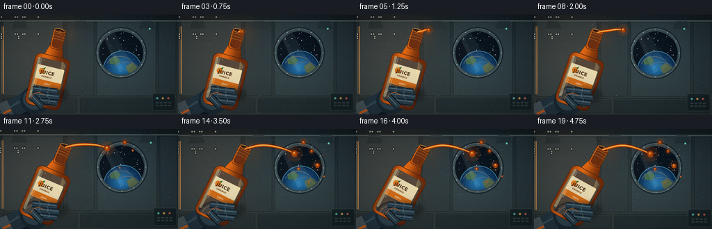
展开代码变化
--- 上一保存版本
+++ 本次保存版本
@@ -0,0 +1,649 @@
+from pathlib import Path
+import math
+
+import numpy as np
+from PIL import Image, ImageDraw, ImageFilter, ImageFont
+
+import artifact_io
+
+
+CASE_DIR = Path(__file__).resolve().parent
+W, H, N, FPS = 256, 144, 20, 4.0
+SS = 4
+HW, HH = W * SS, H * SS
+
+
+def s(value):
+ return int(round(value * SS))
+
+
+def pt(x, y):
+ return (s(x), s(y))
+
+
+def mix(a, b, t):
+ return tuple(int(round(a[i] + (b[i] - a[i]) * t)) for i in range(3))
+
+
+def smoothstep(x):
+ x = max(0.0, min(1.0, x))
+ return x * x * (3.0 - 2.0 * x)
+
+
+def rgba(color, alpha=255):
+ return tuple(color) + (int(alpha),)
+
+
+def vertical_gradient(size, top, bottom):
+ width, height = size
+ y = np.linspace(0.0, 1.0, height, dtype=np.float32)[:, None]
+ top = np.asarray(top, dtype=np.float32)[None, :]
+ bottom = np.asarray(bottom, dtype=np.float32)[None, :]
+ arr = top * (1.0 - y) + bottom * y
+ arr = np.repeat(arr[:, None, :], width, axis=1)
+ return Image.fromarray(np.clip(arr, 0, 255).astype(np.uint8), "RGB")
+
+
+def radial_glow(size, center, radius, color, strength):
+ width, height = size
+ yy, xx = np.mgrid[0:height, 0:width].astype(np.float32)
+ dist2 = (xx - center[0]) ** 2 + (yy - center[1]) ** 2
+ alpha = np.exp(-dist2 / max(1.0, radius * radius)) * strength
+ layer = np.zeros((height, width, 4), dtype=np.uint8)
+ layer[:, :, :3] = np.asarray(color, dtype=np.uint8)
+ layer[:, :, 3] = np.clip(alpha, 0, 255).astype(np.uint8)
+ return Image.fromarray(layer, "RGBA")
+
+
+def add_rivets(draw, points, radius=2, light=(173, 189, 191), dark=(21, 31, 35)):
+ for x, y in points:
+ r = s(radius)
+ draw.ellipse((x - r, y - r, x + r, y + r), fill=rgba(dark))
+ rr = max(1, r // 2)
+ draw.ellipse((x - rr, y - rr, x + rr, y + rr), fill=rgba(light, 150))
+
+
+def make_background():
+ bg = vertical_gradient((HW, HH), (27, 40, 47), (48, 59, 60)).convert("RGBA")
+
+ # Broad wall panels and their dark seams.
+ panel = Image.new("RGBA", (HW, HH), (0, 0, 0, 0))
+ d = ImageDraw.Draw(panel)
+ panels = [
+ (4, 8, 91, 117, (54, 69, 74, 155)),
+ (96, 8, 135, 117, (41, 55, 61, 165)),
+ (139, 8, 224, 117, (51, 66, 70, 155)),
+ (228, 8, 253, 117, (39, 53, 59, 165)),
+ (4, 120, 111, 141, (33, 46, 51, 170)),
+ (115, 120, 253, 141, (29, 41, 46, 180)),
+ ]
+ for x0, y0, x1, y1, color in panels:
+ d.rounded_rectangle(
+ (s(x0), s(y0), s(x1), s(y1)),
+ radius=s(2),
+ fill=color,
+ outline=rgba((15, 24, 28), 185),
+ width=max(1, s(0.55)),
+ )
+ d.line((s(x0 + 1), s(y0 + 1.5), s(x1 - 1), s(y0 + 1.5)),
+ fill=rgba((157, 177, 176), 45), width=max(1, s(0.35)))
+ bg = Image.alpha_composite(bg, panel)
+
+ # Overhead service rail and soft ceiling ribs.
+ overlay = Image.new("RGBA", (HW, HH), (0, 0, 0, 0))
+ d = ImageDraw.Draw(overlay)
+ d.rectangle((0, 0, HW, s(9)), fill=rgba((19, 29, 34), 230))
+ d.rectangle((0, s(8), HW, s(10)), fill=rgba((76, 93, 97), 220))
+ d.line((0, s(10.5), HW, s(10.5)), fill=rgba((12, 20, 24), 210),
+ width=max(1, s(0.6)))
+ for x in (28, 116, 211):
+ d.polygon(
+ [pt(x - 8, 9), pt(x + 8, 9), pt(x + 12, 20), pt(x - 11, 20)],
+ fill=rgba((32, 46, 52), 210),
+ )
+ d.line((s(x - 9), s(10), s(x + 10), s(10)),
+ fill=rgba((133, 153, 155), 70), width=max(1, s(0.45)))
+
+ # Thin warm light strip on the left wall.
+ d.rounded_rectangle((s(3), s(17), s(5.5), s(114)), radius=s(1),
+ fill=rgba((238, 159, 83), 210))
+ d.rounded_rectangle((s(2), s(17), s(4), s(114)), radius=s(1),
+ fill=rgba((255, 224, 165), 55))
+
+ # Small control bank in the lower-right, partly in shadow.
+ d.rounded_rectangle((s(219), s(113), s(252), s(138)), radius=s(2.5),
+ fill=rgba((22, 34, 39), 230),
+ outline=rgba((91, 111, 113), 105), width=max(1, s(0.4)))
+ for i, color in enumerate(((87, 206, 181), (245, 173, 73), (215, 89, 63))):
+ cx = 226 + i * 8
+ d.ellipse((s(cx - 1.5), s(119), s(cx + 1.5), s(122)),
+ fill=rgba(color, 205))
+ d.ellipse((s(cx - 0.7), s(119.4), s(cx + 0.2), s(120.2)),
+ fill=rgba((255, 255, 235), 100))
+ for row in range(2):
+ for col in range(4):
+ x0 = 224 + col * 6
+ y0 = 126 + row * 4
+ d.rounded_rectangle((s(x0), s(y0), s(x0 + 4), s(y0 + 1.8)),
+ radius=s(0.5), fill=rgba((56, 71, 74), 210))
+
+ bg = Image.alpha_composite(bg, overlay)
+
+ # The window and its layered metal frame.
+ window = Image.new("RGBA", (HW, HH), (0, 0, 0, 0))
+ d = ImageDraw.Draw(window)
+ cx, cy, r = 174.0, 55.0, 33.0
+ d.ellipse((s(cx - r - 4), s(cy - r - 4), s(cx + r + 4), s(cy + r + 4)),
+ fill=rgba((15, 23, 28), 180))
+ d.ellipse((s(cx - r - 2), s(cy - r - 2), s(cx + r + 2), s(cy + r + 2)),
+ fill=rgba((53, 70, 75), 255),
+ outline=rgba((142, 163, 163), 150), width=max(1, s(0.7)))
+ d.ellipse((s(cx - r + 1.2), s(cy - r + 1.2), s(cx + r - 1.2), s(cy + r - 1.2)),
+ fill=rgba((8, 14, 21), 255),
+ outline=rgba((22, 35, 42), 255), width=max(1, s(1.2)))
+ bg = Image.alpha_composite(bg, window)
+
+ # Clip the view through the window to a circle.
+ mask = Image.new("L", (HW, HH), 0)
+ md = ImageDraw.Draw(mask)
+ md.ellipse((s(cx - r + 1.5), s(cy - r + 1.5), s(cx + r - 1.5), s(cy + r - 1.5)),
+ fill=255)
+ space = Image.new("RGBA", (HW, HH), (3, 9, 17, 255))
+ sd = ImageDraw.Draw(space)
+ rng = np.random.default_rng(23)
+ for _ in range(48):
+ angle = rng.uniform(0, 2 * math.pi)
+ rr = r * math.sqrt(rng.uniform(0, 0.96))
+ x = cx + math.cos(angle) * rr
+ y = cy + math.sin(angle) * rr
+ if y > cy + 11:
+ continue
+ rad = rng.uniform(0.15, 0.55)
+ bright = int(rng.uniform(115, 230))
+ sd.ellipse((s(x - rad), s(y - rad), s(x + rad), s(y + rad)),
+ fill=rgba((bright, bright, min(255, bright + 16)), 210))
+
+ # Earth, lit from upper-left.
+ earth = Image.new("RGBA", (HW, HH), (0, 0, 0, 0))
+ ed = ImageDraw.Draw(earth)
+ ex, ey, er = 176.0, 80.0, 28.0
+ for i in range(34, 0, -1):
+ f = i / 34.0
+ rad = er * f
+ shade = 1.0 - f
+ color = (
+ int(7 + 22 * shade),
+ int(33 + 84 * shade),
+ int(67 + 110 * shade),
+ )
+ ox = -3.5 * (1.0 - f)
+ oy = -5.0 * (1.0 - f)
+ ed.ellipse((s(ex + ox - rad), s(ey + oy - rad),
+ s(ex + ox + rad), s(ey + oy + rad)), fill=rgba(color))
+ # Ocean bands, continents, and cloud ribbons.
+ ed.polygon([pt(157, 64), pt(166, 59), pt(173, 66), pt(167, 72), pt(158, 71)],
+ fill=rgba((82, 127, 82), 195))
+ ed.polygon([pt(181, 74), pt(190, 69), pt(198, 76), pt(193, 86), pt(184, 83)],
+ fill=rgba((119, 137, 84), 175))
+ for width, alpha in ((3.1, 60), (1.8, 90), (0.8, 145)):
+ ed.arc((s(153), s(60), s(192), s(89)), 198, 342,
+ fill=rgba((231, 242, 238), alpha), width=max(1, s(width * 0.35)))
+ ed.arc((s(163), s(68), s(201), s(94)), 204, 333,
+ fill=rgba((242, 247, 241), alpha), width=max(1, s(width * 0.28)))
+ # Atmospheric rim.
+ ed.arc((s(ex - er), s(ey - er), s(ex + er), s(ey + er)), 188, 342,
+ fill=rgba((88, 187, 226), 175), width=max(1, s(1.1)))
+ earth.putalpha(Image.composite(earth.getchannel("A"), Image.new("L", (HW, HH), 0), mask))
+ space = Image.alpha_composite(space, earth)
+ bg.paste(space, (0, 0), mask)
+
+ # Window glass reflections.
+ glass = Image.new("RGBA", (HW, HH), (0, 0, 0, 0))
+ gd = ImageDraw.Draw(glass)
+ gd.polygon([pt(151, 26), pt(163, 24), pt(191, 74), pt(181, 83)],
+ fill=rgba((173, 218, 230), 18))
+ gd.polygon([pt(149, 33), pt(154, 31), pt(178, 80), pt(172, 84)],
+ fill=rgba((220, 245, 250), 24))
+ gd.arc((s(cx - r + 1.5), s(cy - r + 1.5), s(cx + r - 1.5), s(cy + r - 1.5)),
+ 202, 319, fill=rgba((230, 250, 253), 95), width=max(1, s(0.45)))
+ glass.putalpha(Image.composite(glass.getchannel("A"), Image.new("L", (HW, HH), 0), mask))
+ bg = Image.alpha_composite(bg, glass)
+
+ # Bolts around the window frame.
+ d = ImageDraw.Draw(bg)
+ for angle in np.linspace(0, 2 * math.pi, 12, endpoint=False):
+ bx = cx + math.cos(angle) * (r + 1.2)
+ by = cy + math.sin(angle) * (r + 1.2)
+ d.ellipse((s(bx - 0.85), s(by - 0.85), s(bx + 0.85), s(by + 0.85)),
+ fill=rgba((102, 121, 122), 200))
+ d.ellipse((s(bx - 0.35), s(by - 0.35), s(bx + 0.3), s(by + 0.3)),
+ fill=rgba((207, 221, 218), 105))
+
+ # Panel rivets and a few tiny status lights.
+ add_rivets(d, [
+ (8, 14), (87, 14), (100, 14), (131, 14), (143, 14), (220, 14),
+ (8, 112), (87, 112), (100, 112), (131, 112), (143, 112), (220, 112),
+ (8, 126), (8, 136), (107, 126), (107, 136),
+ ])
+ d.ellipse((s(214), s(19), s(216.5), s(21.5)), fill=rgba((92, 226, 186), 220))
+ d.ellipse((s(214.8), s(19.4), s(215.5), s(20.1)), fill=rgba((236, 255, 241), 180))
+
+ # A soft interior highlight and a cool rim from the window.
+ bg = Image.alpha_composite(bg, radial_glow((HW, HH), (s(50), s(50)), s(85),
+ (255, 175, 98), 24))
+ bg = Image.alpha_composite(bg, radial_glow((HW, HH), (s(174), s(55)), s(52),
+ (90, 176, 216), 19))
+ return bg
+
+
+def bottle_shape_mask():
+ mask = Image.new("L", (s(68), s(122)), 0)
+ d = ImageDraw.Draw(mask)
+ d.rounded_rectangle((s(25), s(3), s(43), s(32)), radius=s(4), fill=255)
+ d.polygon([pt(25, 27), pt(43, 27), pt(48, 43), pt(54, 52),
+ pt(54, 58), pt(14, 58), pt(14, 52), pt(20, 43)], fill=255)
+ d.rounded_rectangle((s(8), s(42), s(60), s(118)), radius=s(9), fill=255)
+ return mask
+
+
+def make_bottle():
+ size = (s(68), s(122))
+ mask = bottle_shape_mask()
+ bottle = Image.new("RGBA", size, (0, 0, 0, 0))
+
+ # Amber glass and juice body, shaded from a warm center to dark rims.
+ arr = np.zeros((size[1], size[0], 4), dtype=np.uint8)
+ yy, xx = np.mgrid[0:size[1], 0:size[0]].astype(np.float32)
+ xnorm = (xx - s(8)) / max(1.0, s(52))
+ light = np.exp(-((xnorm - 0.28) / 0.27) ** 2)
+ vertical = np.clip((yy - s(4)) / max(1.0, s(114)), 0, 1)
+ arr[:, :, 0] = np.clip(104 + 128 * light + 18 * (1 - vertical), 0, 255)
+ arr[:, :, 1] = np.clip(34 + 68 * light + 13 * (1 - vertical), 0, 255)
+ arr[:, :, 2] = np.clip(7 + 10 * light, 0, 255)
+ arr[:, :, 3] = 235
+ fill = Image.fromarray(arr, "RGBA")
+ bottle.paste(fill, (0, 0), mask)
+
+ d = ImageDraw.Draw(bottle)
+ # Darker liquid near the mouth and edges.
+ d.rounded_rectangle((s(27), s(4), s(41), s(30)), radius=s(4),
+ fill=rgba((123, 43, 7), 205))
+ d.rounded_rectangle((s(12), s(48), s(56), s(114)), radius=s(6),
+ fill=rgba((220, 86, 9), 38))
+ # Edge outline and inner glass rim.
+ outline_mask = mask.filter(ImageFilter.FIND_EDGES)
+ outline = Image.new("RGBA", size, rgba((45, 18, 7), 0))
+ outline.putalpha(outline_mask.point(lambda v: min(220, int(v * 2.8))))
+ bottle = Image.alpha_composite(bottle, outline)
+ d = ImageDraw.Draw(bottle)
+ d.rounded_rectangle((s(8), s(42), s(60), s(118)), radius=s(9),
+ outline=rgba((74, 27, 8), 195), width=max(1, s(0.7)))
+ d.rounded_rectangle((s(25), s(3), s(43), s(32)), radius=s(4),
+ outline=rgba((80, 31, 9), 210), width=max(1, s(0.65)))
+
+ # Neck threads and the open lip.
+ for y in (9.0, 13.0, 17.0):
+ d.arc((s(24.5), s(y), s(43.5), s(y + 3.0)), 185, 355,
+ fill=rgba((255, 171, 69), 155), width=max(1, s(0.5)))
+ d.ellipse((s(26), s(1.5), s(42), s(7.0)), fill=rgba((68, 25, 8), 255),
+ outline=rgba((255, 155, 55), 215), width=max(1, s(0.7)))
+ d.ellipse((s(29), s(2.7), s(39), s(5.2)), fill=rgba((26, 12, 8), 255))
+ d.arc((s(28), s(2.1), s(40), s(5.8)), 200, 340,
+ fill=rgba((255, 216, 133), 135), width=max(1, s(0.4)))
+
+ # Cream label with orange band and a compact fruit mark.
+ d.rounded_rectangle((s(14), s(58), s(54), s(88)), radius=s(2),
+ fill=rgba((242, 226, 182), 246),
+ outline=rgba((111, 74, 35), 220), width=max(1, s(0.5)))
+ d.rectangle((s(14.5), s(79), s(53.5), s(87.2)), fill=rgba((225, 116, 25), 238))
+ d.line((s(15), s(58.5), s(53), s(58.5)),
+ fill=rgba((255, 250, 225), 170), width=max(1, s(0.35)))
+ d.ellipse((s(18), s(63), s(26), s(71)), fill=rgba((242, 124, 17), 245),
+ outline=rgba((152, 67, 11), 180), width=max(1, s(0.35)))
+ d.ellipse((s(20), s(64.5), s(22), s(66.5)), fill=rgba((255, 199, 89), 180))
+ d.polygon([pt(23, 63), pt(26.5, 60.5), pt(25.5, 64.2)],
+ fill=rgba((57, 117, 50), 230))
+ font_path = "/usr/share/fonts/truetype/dejavu/DejaVuSans-Bold.ttf"
+ try:
+ font = ImageFont.truetype(font_path, s(7.0))
+ small = ImageFont.truetype(font_path, s(3.2))
+ except OSError:
+ font = ImageFont.load_default()
+ small = font
+ d.text((s(31), s(64.0)), "JUICE", font=font, fill=rgba((80, 48, 25), 255),
+ anchor="ma")
+ d.text((s(31), s(72.0)), "ORANGE", font=small, fill=rgba((126, 67, 23), 225),
+ anchor="ma")
+ d.text((s(34), s(82.0)), "100%", font=small, fill=rgba((255, 245, 211), 240),
+ anchor="ma")
+
+ # Glass highlights and small suspended pulp flecks.
+ highlight = Image.new("RGBA", size, (0, 0, 0, 0))
+ hd = ImageDraw.Draw(highlight)
+ hd.rounded_rectangle((s(12.5), s(48), s(16.2), s(109)), radius=s(2),
+ fill=rgba((255, 236, 177), 105))
+ hd.rounded_rectangle((s(17.2), s(49), s(18.6), s(92)), radius=s(1),
+ fill=rgba((255, 250, 219), 65))
+ hd.polygon([pt(47, 46), pt(54, 52), pt(51, 66), pt(49, 62)],
+ fill=rgba((255, 217, 141), 60))
+ hd.rounded_rectangle((s(9), s(55), s(10.3), s(100)), radius=s(1),
+ fill=rgba((95, 35, 8), 105))
+ hd.arc((s(30), s(4.5), s(38), s(7.0)), 205, 330,
+ fill=rgba((255, 233, 174), 100), width=max(1, s(0.4)))
+ for x, y, r in ((22, 51, 0.7), (49, 52, 0.55), (21, 108, 0.5),
+ (47, 110, 0.7), (31, 112, 0.45)):
+ hd.ellipse((s(x - r), s(y - r), s(x + r), s(y + r)),
+ fill=rgba((255, 179, 66), 105))
+ bottle = Image.alpha_composite(bottle, highlight)
+ return bottle
+
+
+def draw_glove_back(canvas):
+ d = ImageDraw.Draw(canvas)
+ # Forearm fabric, receding toward the bottom-left corner.
+ d.line((s(-16), s(157), s(45), s(124)), fill=rgba((17, 29, 38), 255),
+ width=s(33), joint="curve")
+ d.line((s(-14), s(153), s(45), s(120)), fill=rgba((37, 56, 68), 255),
+ width=s(27), joint="curve")
+ d.line((s(-13), s(149), s(43), s(117)), fill=rgba((58, 82, 94), 135),
+ width=s(3), joint="curve")
+ # Cuff and its orange utility stripe.
+ d.line((s(4), s(145), s(17), s(139)), fill=rgba((76, 90, 96), 255),
+ width=s(35), joint="curve")
+ d.line((s(5), s(142), s(16), s(137)), fill=rgba((207, 99, 34), 225),
+ width=s(3.5), joint="curve")
+ d.line((s(2), s(148), s(13), s(143)), fill=rgba((20, 30, 36), 210),
+ width=s(1.2), joint="curve")
+ # Soft palm mass behind the bottle.
+ d.ellipse((s(29), s(103), s(72), s(143)), fill=rgba((28, 44, 54), 255))
+ d.ellipse((s(33), s(106), s(66), s(137)), fill=rgba((48, 70, 82), 255))
+ d.arc((s(35), s(109), s(65), s(136)), 205, 325,
+ fill=rgba((111, 137, 145), 75), width=max(1, s(0.8)))
+
+
+def draw_glove_fingers(canvas):
+ d = ImageDraw.Draw(canvas)
+ fingers = [
+ ((47, 107), (82, 111), 7.5),
+ ((46, 115), (85, 119), 7.3),
+ ((48, 123), (82, 127), 6.8),
+ ]
+ for (x0, y0), (x1, y1), width in fingers:
+ d.line((s(x0), s(y0), s(x1), s(y1)), fill=rgba((16, 28, 37), 255),
+ width=s(width + 2.0))
+ d.line((s(x0), s(y0), s(x1), s(y1)), fill=rgba((41, 62, 75), 255),
+ width=s(width))
+ d.line((s(x0 + 1), s(y0 - 1.2), s(x1 - 1), s(y1 - 1.2)),
+ fill=rgba((92, 119, 130), 155), width=s(1.2))
+ for x in (x0 + 9, x0 + 21):
+ d.arc((s(x - 1.7), s(y0 - 3.5), s(x + 2.2), s(y0 + 3.5)),
+ 265, 95, fill=rgba((100, 126, 134), 100), width=max(1, s(0.4)))
+ # Thumb across the lower grip.
+ d.line((s(45), s(117), s(61), s(133)), fill=rgba((13, 25, 33), 255),
+ width=s(10.5), joint="curve")
+ d.line((s(45), s(117), s(61), s(133)), fill=rgba((43, 65, 77), 255),
+ width=s(8.2), joint="curve")
+ d.line((s(46), s(117.5), s(58), s(130)), fill=rgba((107, 135, 143), 130),
+ width=s(1.3), joint="curve")
+ # A restrained orange accent on the cuff edge.
+ d.arc((s(43), s(112), s(67), s(140)), 198, 315,
+ fill=rgba((210, 102, 35), 155), width=max(1, s(0.8)))
+
+
+def bezier_points(points, count=90):
+ p = np.asarray(points, dtype=np.float64)
+ t = np.linspace(0.0, 1.0, count)
+ omt = 1.0 - t
+ out = (
+ omt[:, None] ** 3 * p[0]
+ + 3 * omt[:, None] ** 2 * t[:, None] * p[1]
+ + 3 * omt[:, None] * t[:, None] ** 2 * p[2]
+ + t[:, None] ** 3 * p[3]
+ )
+ return out
+
+
+def stream_polygon(points, widths):
+ left = []
+ right = []
+ for i, (p, width) in enumerate(zip(points, widths)):
+ if i == 0:
+ tangent = points[1] - points[0]
+ elif i == len(points) - 1:
+ tangent = points[-1] - points[-2]
+ else:
+ tangent = points[i + 1] - points[i - 1]
+ norm = math.hypot(float(tangent[0]), float(tangent[1]))
+ if norm < 1e-5:
+ normal = np.array((0.0, 1.0))
+ else:
+ normal = np.array((-tangent[1] / norm, tangent[0] / norm))
+ left.append(p + normal * width * 0.5)
+ right.append(p - normal * width * 0.5)
+ polygon = [pt(float(x), float(y)) for x, y in left]
+ polygon += [pt(float(x), float(y)) for x, y in reversed(right)]
+ return polygon
+
+
+def draw_juice_orb(canvas, center, radius, alpha=255):
+ if radius < 0.25 or alpha <= 0:
+ return
+ cx, cy = center
+ glow = Image.new("RGBA", canvas.size, (0, 0, 0, 0))
+ gd = ImageDraw.Draw(glow)
+ gr = radius * 2.5
+ gd.ellipse((s(cx - gr), s(cy - gr), s(cx + gr), s(cy + gr)),
+ fill=rgba((255, 94, 8), int(alpha * 0.13)))
+ glow = glow.filter(ImageFilter.GaussianBlur(s(1.1)))
+ canvas.alpha_composite(glow)
+ d = ImageDraw.Draw(canvas)
+ for i in range(15, 0, -1):
+ f = i / 15.0
+ rr = radius * f
+ ox = -radius * 0.18 * (1.0 - f)
+ oy = -radius * 0.24 * (1.0 - f)
+ edge = 1.0 - f
+ color = (
+ int(126 + 120 * edge),
+ int(30 + 105 * edge),
+ int(3 + 18 * edge),
+ )
+ d.ellipse((s(cx + ox - rr), s(cy + oy - rr),
+ s(cx + ox + rr), s(cy + oy + rr)),
+ fill=rgba(color, alpha))
+ d.ellipse((s(cx - radius * 0.26), s(cy - radius * 0.43),
+ s(cx + radius * 0.02), s(cy - radius * 0.17)),
+ fill=rgba((255, 246, 200), int(alpha * 0.72)))
+ d.arc((s(cx - radius * 0.9), s(cy - radius * 0.9),
+ s(cx + radius * 0.9), s(cy + radius * 0.9)),
+ 35, 145, fill=rgba((255, 214, 119), int(alpha * 0.55)),
+ width=max(1, s(0.35)))
+
+
+def draw_stream(canvas, mouth, progress, t):
+ if progress <= 0.015:
+ draw_juice_orb(canvas, (mouth[0] + 0.4, mouth[1] + 0.2), 1.15 + 1.6 * progress,
+ alpha=int(180 + 60 * progress))
+ return
+
+ final_end = np.array((166.0, 35.0))
+ p0 = np.asarray(mouth, dtype=np.float64)
+ p1 = p0 + np.array((18.0, -4.5))
+ p2 = np.array((133.0, 16.5))
+ p3 = final_end
+ raw = bezier_points([p0, p1, p2, p3], 120)
+ end_index = max(2, int(round(progress * (len(raw) - 1))))
+ points = raw[:end_index + 1].copy()
+ count = len(points)
+ for i in range(count):
+ u = i / max(1, count - 1)
+ tangent = points[min(i + 1, count - 1)] - points[max(i - 1, 0)]
+ norm = math.hypot(float(tangent[0]), float(tangent[1]))
+ if norm > 1e-5:
+ normal = np.array((-tangent[1] / norm, tangent[0] / norm))
+ wave = 0.75 * math.sin(u * 8.2 - t * 5.0) * u
+ points[i] += normal * wave
+ widths = []
+ for i in range(count):
+ u = i / max(1, count - 1)
+ widths.append(1.45 + 1.25 * math.sin(min(1.0, u * 1.15) * math.pi) ** 0.55)
+ widths[-1] *= 1.15
+
+ glow = Image.new("RGBA", canvas.size, (0, 0, 0, 0))
+ gd = ImageDraw.Draw(glow)
+ glow_poly = stream_polygon(points, [w + 3.2 for w in widths])
+ gd.polygon(glow_poly, fill=rgba((255, 74, 4), 52))
+ glow = glow.filter(ImageFilter.GaussianBlur(s(1.4)))
+ canvas.alpha_composite(glow)
+
+ d = ImageDraw.Draw(canvas)
+ shadow_poly = stream_polygon(points, [w + 1.15 for w in widths])
+ d.polygon(shadow_poly, fill=rgba((113, 31, 3), 245))
+ body_poly = stream_polygon(points, widths)
+ d.polygon(body_poly, fill=rgba((244, 91, 5), 250))
+ for i in range(0, count, 2):
+ p = points[i]
+ r = widths[i] * 0.50
+ d.ellipse((s(p[0] - r), s(p[1] - r), s(p[0] + r), s(p[1] + r)),
+ fill=rgba((244, 91, 5), 250))
+
+ # A warm core and narrow specular line follow the ribbon.
+ for layer, color, offset, width_scale, alpha in (
+ ("core", (255, 148, 22), 0.0, 0.54, 230),
+ ("spec", (255, 235, 156), -0.32, 0.18, 190),
+ ):
+ core = []
+ for i in range(count):
+ u = i / max(1, count - 1)
+ tangent = points[min(i + 1, count - 1)] - points[max(i - 1, 0)]
+ norm = math.hypot(float(tangent[0]), float(tangent[1]))
+ normal = np.array((0.0, 0.0))
+ if norm > 1e-5:
+ normal = np.array((-tangent[1] / norm, tangent[0] / norm))
+ core.append(points[i] + normal * offset)
+ core_widths = [max(0.38, w * width_scale) for w in widths]
+ d.polygon(stream_polygon(core, core_widths), fill=rgba(color, alpha))
+
+ tip = points[-1]
+ draw_juice_orb(canvas, (float(tip[0]), float(tip[1])),
+ 2.2 + 2.5 * progress, alpha=255)
+
+
+def draw_floating_drops(canvas, progress, t):
+ drops = [
+ (177.0, 20.5, 2.8, 0.72, (3.0, -1.5)),
+ (189.0, 31.0, 2.25, 0.80, (3.4, 0.7)),
+ (198.0, 51.0, 3.8, 0.88, (3.8, 1.2)),
+ (208.0, 67.0, 1.8, 0.94, (4.2, 1.6)),
+ (171.0, 56.0, 2.0, 0.84, (3.2, 1.1)),
+ (186.0, 74.0, 1.25, 0.90, (3.6, 1.5)),
+ (207.0, 37.0, 1.15, 0.98, (4.5, 0.3)),
+ ]
+ for x, y, radius, threshold, velocity in drops:
+ appear = smoothstep((progress - threshold) / 0.18)
+ if appear <= 0.0:
+ continue
+ age = max(0.0, progress - threshold)
+ cx = x + velocity[0] * age * 3.0
+ cy = y + velocity[1] * age * 3.0 + 0.45 * math.sin(t * 4.0 + x)
+ draw_juice_orb(canvas, (cx, cy), radius * (0.55 + 0.45 * appear),
+ alpha=int(255 * appear))
+
+
+def add_dust_and_finish(frame):
+ arr = np.asarray(frame.convert("RGB"), dtype=np.float32)
+ yy, xx = np.mgrid[0:H, 0:W].astype(np.float32)
+ nx = (xx - W * 0.5) / (W * 0.5)
+ ny = (yy - H * 0.5) / (H * 0.5)
+ vignette = np.clip(1.0 - 0.15 * (nx * nx + ny * ny), 0.72, 1.0)
+ arr *= vignette[:, :, None]
+
+ # Sparse dust motes catch the warm interior light.
+ dust = np.zeros((H, W), dtype=np.float32)
+ rng = np.random.default_rng(117)
+ for _ in range(28):
+ x = int(rng.integers(5, W - 5))
+ y = int(rng.integers(5, H - 5))
+ dust[y, x] = rng.uniform(18, 55)
+ dust_u8 = np.clip(dust, 0, 255).astype(np.uint8)
+ dust = np.asarray(Image.fromarray(dust_u8).filter(ImageFilter.GaussianBlur(0.45)))
+ arr += dust[:, :, None] * np.array((1.0, 0.72, 0.45), dtype=np.float32)[None, None, :]
+
+ rng = np.random.default_rng(9)
+ grain = rng.normal(0.0, 1.25, (H, W, 1)).astype(np.float32)
+ arr += grain
+ return Image.fromarray(np.clip(arr, 0, 255).astype(np.uint8), "RGB")
+
+
+def render_frame(index):
+ t = index / (N - 1)
+ bg = make_background()
+ draw_glove_back(bg)
+
+ # Bottle pivots slowly clockwise, while the grip remains nearly steady.
+ angle = 13.5 + 15.5 * smoothstep(t)
+ cx = 73.0 - 1.2 * t
+ cy = 78.0 - 1.0 * smoothstep(t)
+ theta = math.radians(angle)
+ mouth = (
+ cx + math.sin(theta) * 55.0,
+ cy - math.cos(theta) * 55.0,
+ )
+
+ bottle = make_bottle().rotate(-angle, resample=Image.Resampling.BICUBIC, expand=True)
+ px = s(cx) - bottle.width // 2
+ py = s(cy) - bottle.height // 2
+ bg.alpha_composite(bottle, (px, py))
+
+ # Shadow where the bottle meets the glove.
+ shade = Image.new("RGBA", (HW, HH), (0, 0, 0, 0))
+ sd = ImageDraw.Draw(shade)
+ sd.ellipse((s(cx - 22), s(cy + 26), s(cx + 25), s(cy + 48)),
+ fill=rgba((5, 12, 15), 105))
+ shade = shade.filter(ImageFilter.GaussianBlur(s(3.2)))
+ bg.alpha_composite(shade)
+ draw_glove_fingers(bg)
+
+ progress = smoothstep((t - 0.02) / 0.73)
+ draw_stream(bg, mouth, progress, t)
+ draw_floating_drops(bg, progress, t)
+
+ # Warm bounce light from the juice onto the bottle edge.
+ bg.alpha_composite(radial_glow((HW, HH), (s(mouth[0] + 10), s(mouth[1] + 2)),
+ s(17), (255, 125, 28), 19))
+
+ # Bloom, downsampling, and a gentle camera push-in.
+ rgb = bg.convert("RGB")
+ bloom_src = np.asarray(rgb, dtype=np.float32)
+ warm = np.clip(
+ (bloom_src[:, :, 0] - 155) * 0.75
+ + (bloom_src[:, :, 1] - 62) * 0.28,
+ 0,
+ 150,
+ )
+ warm *= np.clip((bloom_src[:, :, 0] - bloom_src[:, :, 2] * 1.4) / 100.0, 0, 1)
+ bloom = Image.fromarray(np.clip(warm, 0, 255).astype(np.uint8), "L")
+ bloom = bloom.filter(ImageFilter.GaussianBlur(s(2.7)))
+ glow_rgb = Image.new("RGB", (HW, HH), (255, 102, 12))
+ rgb = Image.composite(glow_rgb, rgb, bloom.point(lambda v: int(v * 0.32)))
+
+ small = rgb.resize((W, H), Image.Resampling.LANCZOS)
+ zoom = 1.0 + 0.018 * smoothstep(t)
+ crop_w = int(round(W / zoom))
+ crop_h = int(round(H / zoom))
+ left = (W - crop_w) // 2
+ top = (H - crop_h) // 2 - int(round(0.8 * smoothstep(t)))
+ small = small.crop((left, top, left + crop_w, top + crop_h)).resize(
+ (W, H), Image.Resampling.LANCZOS
+ )
+ return add_dust_and_finish(small)
+
+
+def main():
+ frames = [np.asarray(render_frame(i), dtype=np.uint8) for i in range(N)]
+ artifact_io.save(frames, CASE_DIR)
+ print(f"Saved {len(frames)} frames to {CASE_DIR}")
+
+
+if __name__ == "__main__":
+ main()
候选 02播放与检查图
点击播放 · 原生 RGB 像素
展开代码变化
--- 上一保存版本
+++ 本次保存版本
@@ -364,9 +364,9 @@
def draw_glove_fingers(canvas):
d = ImageDraw.Draw(canvas)
fingers = [
- ((47, 107), (82, 111), 7.5),
- ((46, 115), (85, 119), 7.3),
- ((48, 123), (82, 127), 6.8),
+ ((47, 107), (78, 111), 7.0),
+ ((46, 115), (81, 119), 6.9),
+ ((48, 123), (77, 127), 6.5),
]
for (x0, y0), (x1, y1), width in fingers:
d.line((s(x0), s(y0), s(x1), s(y1)), fill=rgba((16, 28, 37), 255),
@@ -375,9 +375,16 @@
width=s(width))
d.line((s(x0 + 1), s(y0 - 1.2), s(x1 - 1), s(y1 - 1.2)),
fill=rgba((92, 119, 130), 155), width=s(1.2))
- for x in (x0 + 9, x0 + 21):
+ for x in (x0 + 8, x0 + 19):
d.arc((s(x - 1.7), s(y0 - 3.5), s(x + 2.2), s(y0 + 3.5)),
265, 95, fill=rgba((100, 126, 134), 100), width=max(1, s(0.4)))
+ # Rounded fingertips give the grip a readable silhouette.
+ d.ellipse((s(x1 - width * 0.58), s(y1 - width * 0.62),
+ s(x1 + width * 0.58), s(y1 + width * 0.62)),
+ fill=rgba((39, 59, 71), 255))
+ d.arc((s(x1 - width * 0.48), s(y1 - width * 0.50),
+ s(x1 + width * 0.48), s(y1 + width * 0.52)),
+ 210, 335, fill=rgba((112, 139, 147), 120), width=max(1, s(0.55)))
# Thumb across the lower grip.
d.line((s(45), s(117), s(61), s(133)), fill=rgba((13, 25, 33), 255),
width=s(10.5), joint="curve")
@@ -486,8 +493,11 @@
widths = []
for i in range(count):
u = i / max(1, count - 1)
- widths.append(1.45 + 1.25 * math.sin(min(1.0, u * 1.15) * math.pi) ** 0.55)
- widths[-1] *= 1.15
+ body = 1.85 + 1.18 * math.sin(min(1.0, u * 1.16) * math.pi) ** 0.50
+ bead = 0.26 * math.sin(u * 29.0 - t * 3.8) * min(1.0, u * 5.0)
+ taper = 1.0 - 0.34 * smoothstep((u - 0.83) / 0.17)
+ widths.append(max(1.15, (body + bead) * taper))
+ widths[-1] *= 1.20
glow = Image.new("RGBA", canvas.size, (0, 0, 0, 0))
gd = ImageDraw.Draw(glow)
@@ -497,7 +507,7 @@
canvas.alpha_composite(glow)
d = ImageDraw.Draw(canvas)
- shadow_poly = stream_polygon(points, [w + 1.15 for w in widths])
+ shadow_poly = stream_polygon(points, [w + 1.05 for w in widths])
d.polygon(shadow_poly, fill=rgba((113, 31, 3), 245))
body_poly = stream_polygon(points, widths)
d.polygon(body_poly, fill=rgba((244, 91, 5), 250))
@@ -521,23 +531,26 @@
if norm > 1e-5:
normal = np.array((-tangent[1] / norm, tangent[0] / norm))
core.append(points[i] + normal * offset)
- core_widths = [max(0.38, w * width_scale) for w in widths]
+ core_widths = [max(0.42, w * width_scale) for w in widths]
d.polygon(stream_polygon(core, core_widths), fill=rgba(color, alpha))
tip = points[-1]
draw_juice_orb(canvas, (float(tip[0]), float(tip[1])),
- 2.2 + 2.5 * progress, alpha=255)
+ 2.45 + 2.45 * progress, alpha=255)
+ draw_juice_orb(canvas, (float(points[2][0]), float(points[2][1])),
+ 2.05 + 0.35 * math.sin(t * 5.0), alpha=245)
def draw_floating_drops(canvas, progress, t):
drops = [
- (177.0, 20.5, 2.8, 0.72, (3.0, -1.5)),
- (189.0, 31.0, 2.25, 0.80, (3.4, 0.7)),
- (198.0, 51.0, 3.8, 0.88, (3.8, 1.2)),
- (208.0, 67.0, 1.8, 0.94, (4.2, 1.6)),
- (171.0, 56.0, 2.0, 0.84, (3.2, 1.1)),
- (186.0, 74.0, 1.25, 0.90, (3.6, 1.5)),
- (207.0, 37.0, 1.15, 0.98, (4.5, 0.3)),
+ (177.0, 20.5, 2.95, 0.67, (3.0, -1.5)),
+ (189.0, 31.0, 2.35, 0.77, (3.4, 0.7)),
+ (198.0, 51.0, 3.85, 0.86, (3.8, 1.2)),
+ (208.0, 67.0, 1.85, 0.92, (4.2, 1.6)),
+ (171.0, 56.0, 2.05, 0.81, (3.2, 1.1)),
+ (186.0, 74.0, 1.30, 0.89, (3.6, 1.5)),
+ (207.0, 37.0, 1.20, 0.96, (4.5, 0.3)),
+ (215.0, 46.0, 0.95, 0.92, (4.4, 0.6)),
]
for x, y, radius, threshold, velocity in drops:
appear = smoothstep((progress - threshold) / 0.18)
候选 03播放与检查图

候选 04播放与检查图
点击播放 · 原生 RGB 像素

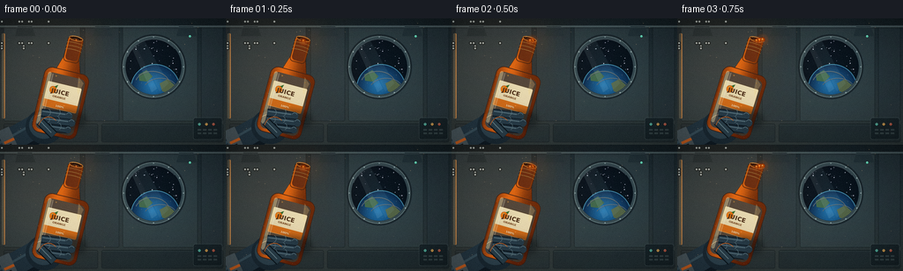
展开代码变化
--- 上一保存版本
+++ 本次保存版本
@@ -594,7 +594,8 @@
draw_glove_back(bg)
# Bottle pivots slowly clockwise, while the grip remains nearly steady.
- angle = 13.5 + 15.5 * smoothstep(t)
+ tilt = t ** 0.78
+ angle = 13.5 + 15.5 * tilt
cx = 73.0 - 1.2 * t
cy = 78.0 - 1.0 * smoothstep(t)
theta = math.radians(angle)
@@ -617,7 +618,7 @@
bg.alpha_composite(shade)
draw_glove_fingers(bg)
- progress = smoothstep((t - 0.02) / 0.73)
+ progress = smoothstep(t / 0.70)
draw_stream(bg, mouth, progress, t)
draw_floating_drops(bg, progress, t)
可观测工具轨迹
实际执行的命令与返回图片。
命令 1exit 0
/bin/bash -c "pwd && rg --files -g 'prompt.txt' -g 'GENERATION_RULES.md' -g 'task_spec.json' -g '"'!node_modules'"' -g '"'!venv'"'"
命令 2exit 0
/bin/bash -c "find . -maxdepth 2 -type f | sed 's#"'^./##'"' | sort | head -200"
命令 3exit 0
/bin/bash -c 'cat prompt.txt'
命令 4exit 0
/bin/bash -c 'cat GENERATION_RULES.md'
命令 5exit 0
/bin/bash -c 'cat task_spec.json'
命令 6exit 0
/bin/bash -c "sed -n '1,260p' artifact_io.py"
命令 7exit 0
/bin/bash -c "sed -n '1,220p' player_template.html"
命令 8exit 0
/bin/bash -c "python - <<'PY' import importlib.util for m in ['numpy','PIL','cv2','imageio','imageio_ffmpeg','matplotlib','scipy']: print(m, bool(importlib.util.find_spec(m))) PY"
命令 9exit 0
/bin/bash -c "fc-match 'DejaVu Sans' | head -1; fc-match 'DejaVu Sans Bold' | head -1; fc-match 'Liberation Sans' | head -1"
命令 10exit 1
/bin/bash -c 'python generate.py'
命令 11exit 0
/bin/bash -c 'python generate.py'
命令 12exit 0
/bin/bash -c "python - <<'PY'
from PIL import Image
for n in [0,4,10,19]:
im=Image.open(f'frames/{n:02d}.png')
im.resize((1024,576), Image.Resampling.NEAREST).save(f'.tmp/frame_{n:02d}_4x.png')
PY"命令 13exit 0
/bin/bash -c "python - <<'PY'
from PIL import Image
im=Image.open('frames/19.png')
im.crop((45,0,180,90)).resize((1080,720), Image.Resampling.NEAREST).save('.tmp/crop_19.png')
PY"命令 14exit 0
/bin/bash -c "mkdir -p .tmp/candidate_01 && cp -r frames inspection.png transition_check.png index.html pixels.npz .tmp/candidate_01/ && sed -n '360,620p' generate.py"
命令 15exit 0
/bin/bash -c "sed -n '520,575p' generate.py"
命令 16exit 0
/bin/bash -c 'python generate.py'
命令 17exit 0
/bin/bash -c "python -m py_compile generate.py && python - <<'PY'
from pathlib import Path
import json
import numpy as np
from PIL import Image
spec=json.loads(Path('task_spec.json').read_text())
with np.load('pixels.npz') as z:
p=z['pixels']
print('pixels', p.shape, p.dtype)
print('frames', len(list(Path('frames').glob('*.png'))))
ims=[np.asarray(Image.open(f'frames/{i:02d}.png')) for i in range(spec['frames'])]
a=np.stack(ims)
print('frames array', a.shape, a.dtype, 'range', int(a.min()), int(a.max()))
diffs=np.mean(np.abs(a[1:].astype(np.int16)-a[:-1].astype(np.int16)), axis=(1,2,3))
print('motion mean/min/max', round(float(diffs.mean()),3), round(float(diffs.min()),3), round(float(diffs.max()),3))
print('all_changing', bool(np.all(diffs>0.1)))
print('artifacts', [name for name in ['pixels.npz','index.html','inspection.png','transition_check.png'] if Path(name).is_file()])
PY
ls -lh generate.py pixels.npz index.html inspection.png transition_check.png"命令 18exit 0
/bin/bash -c "python - <<'PY'
import numpy as np
from PIL import Image
a=np.stack([np.asarray(Image.open(f'frames/{i:02d}.png')) for i in range(20)])
d=np.mean(np.abs(a[1:].astype(np.int16)-a[:-1].astype(np.int16)), axis=(1,2,3))
for i,x in enumerate(d): print(f'{i:02d}->{i+1:02d}: {x:.3f}')
with np.load('pixels.npz') as z: p=z['pixels']
dec=np.stack([(p[:,:,i]>>16)&255 for i in range(20)],axis=-1)
PY"命令 19exit 0
/bin/bash -c 'mkdir -p .tmp/candidate_02 && cp -r frames inspection.png transition_check.png index.html pixels.npz .tmp/candidate_02/'
命令 20exit 0
/bin/bash -c 'python generate.py'
命令 21exit 0
/bin/bash -c "python - <<'PY'
import numpy as np
from PIL import Image
a=np.stack([np.asarray(Image.open(f'frames/{i:02d}.png')) for i in range(20)])
d=np.mean(np.abs(a[1:].astype(np.int16)-a[:-1].astype(np.int16)), axis=(1,2,3))
print('motion mean/min/max', round(float(d.mean()),3), round(float(d.min()),3), round(float(d.max()),3))
print(' '.join(f'{x:.2f}' for x in d))
PY"命令 22exit 0
/bin/bash -c "python - <<'PY'
from PIL import Image
import numpy as np
for n in [0,3,6,9,12,15,18,19]:
Image.open(f'frames/{n:02d}.png').resize((768,432), Image.Resampling.NEAREST).save(f'.tmp/final_{n:02d}.png')
PY"命令 23exit 0
/bin/bash -c 'python generate.py > .tmp/final_run.log 2>&1; status=$?; tail -5 .tmp/final_run.log; exit $status'
命令 24exit 0
/bin/bash -c "python - <<'PY'
from pathlib import Path
import json
import numpy as np
from PIL import Image
spec=json.loads(Path('task_spec.json').read_text())
n,h,w,fps=spec['frames'],spec['height'],spec['width'],spec['fps']
files=sorted(Path('frames').glob('*.png'))
assert len(files)==n, len(files)
frames=np.stack([np.asarray(Image.open(p).convert('RGB')) for p in files])
assert frames.shape==(n,h,w,3) and frames.dtype==np.uint8, frames.shape
with np.load('pixels.npz') as z:
packed=z['pixels']
assert packed.shape==(h,w,n) and packed.dtype==np.uint32, packed.shape
decoded=np.stack([(packed>>16)&255,(packed>>8)&255,packed&255],axis=-1).transpose(2,0,1,3)
assert np.array_equal(decoded,frames), 'pixels.npz and PNG frames differ'
assert Path('index.html').is_file() and Path('index.html').stat().st_size>100000
assert Path('inspection.png').is_file() and Path('transition_check.png').is_file()
diffs=np.mean(np.abs(frames[1:].astype(np.int16)-frames[:-1].astype(np.int16)),axis=(1,2,3))
print('PASS')
print('spec:', w, 'x', h, '@', fps, 'fps', n, 'frames', n/fps, 'seconds')
print('motion transitions:', round(float(diffs.mean()),3), 'mean;', round(float(diffs.min()),3), 'min')
print('pixel tensor:', packed.shape, packed.dtype)
print('artifact bytes:', {p.name:p.stat().st_size for p in [Path('pixels.npz'),Path('index.html'),Path('inspection.png'),Path('transition_check.png')]})
PY"命令 25exit 0
/bin/bash -c 'git status --short 2>/dev/null || true; find frames -maxdepth 1 -type f | wc -l; ls -lh frames/00.png frames/19.png'
视觉工具实际返回图片 1

视觉工具实际返回图片 2
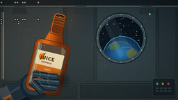
视觉工具实际返回图片 3
视觉工具实际返回图片 4
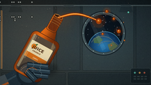
视觉工具实际返回图片 5
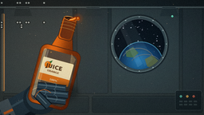
视觉工具实际返回图片 6
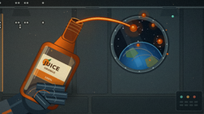
视觉工具实际返回图片 7
视觉工具实际返回图片 8
视觉工具实际返回图片 9
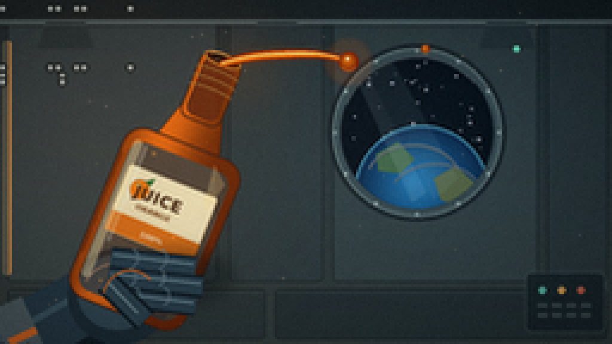
视觉工具实际返回图片 10
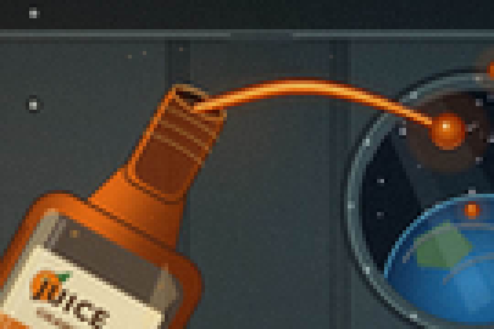
视觉工具实际返回图片 11
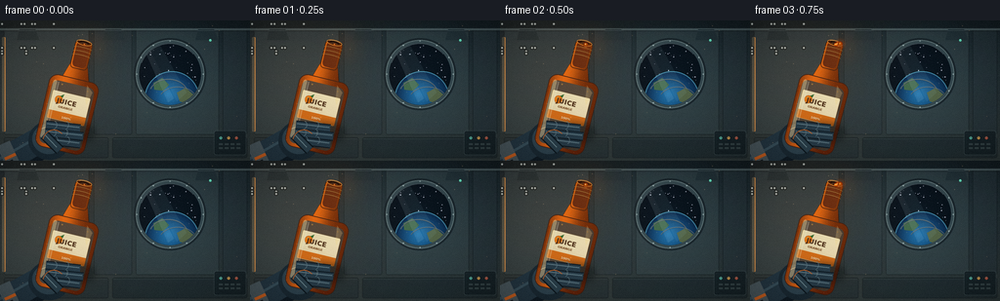
视觉工具实际返回图片 12
视觉工具实际返回图片 13
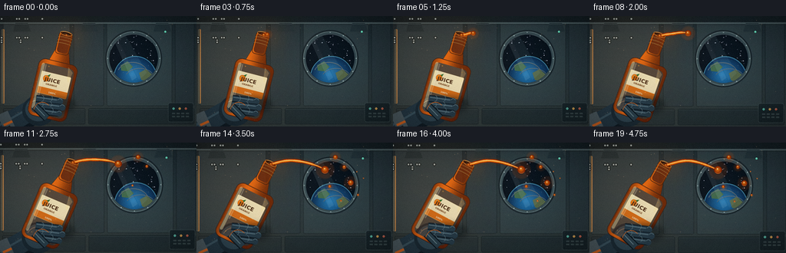
视觉工具实际返回图片 14
视觉工具实际返回图片 15
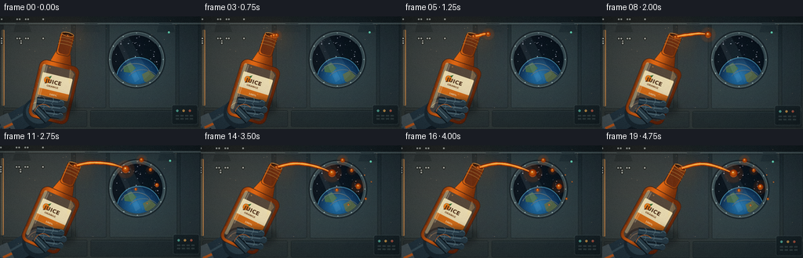
视觉工具实际返回图片 16
视觉工具实际返回图片 17
视觉工具实际返回图片 18
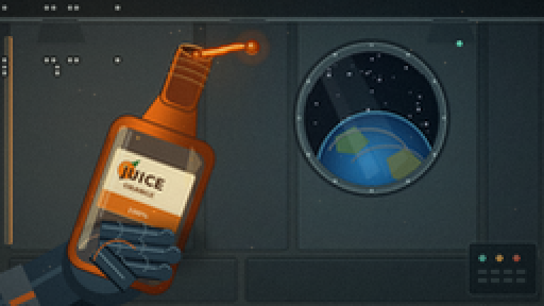
视觉工具实际返回图片 19
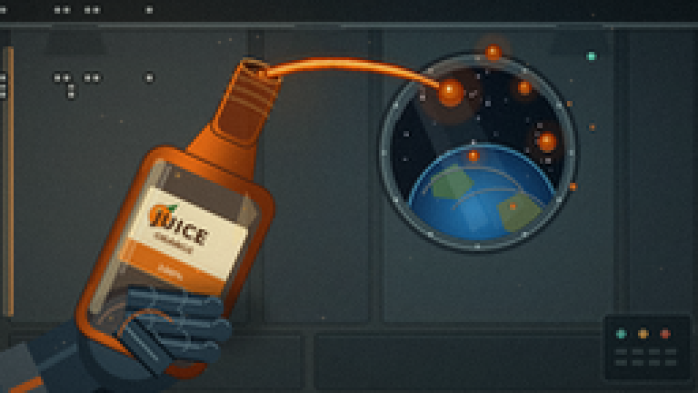
视觉工具实际返回图片 20

保存候选 4 份；完成命令 25 次；可验证图片返回 20 张。原始 API 响应与完整日志保留在本地。